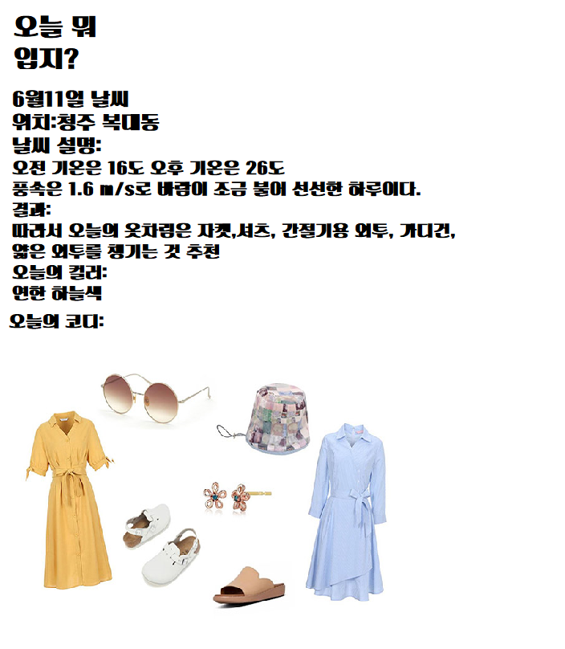

  
<p>
    6월11일 실제 날씨를 참고해서 만들어 본 예시이다.
</p>
<br>
최저기온이 16도이고 최고기온이 26도로 기온차가 많이 나고 있다.
<br>
그리고 풍속이 좀 있는 편이라 최고기온을 대비해서 가벼운 반팔을 입고 위에 겉옷을 걸치거나 얇은 긴팔을 입는 것을 추천한다<div class="">
<br>그리고 날씨에 맞는 색을 추천해주고 그에 맞는 코디도 보여주고 있다.    
</div>